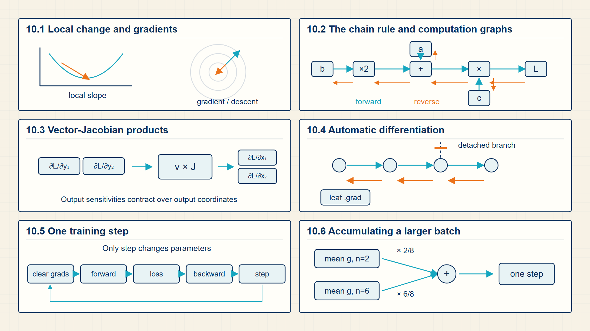
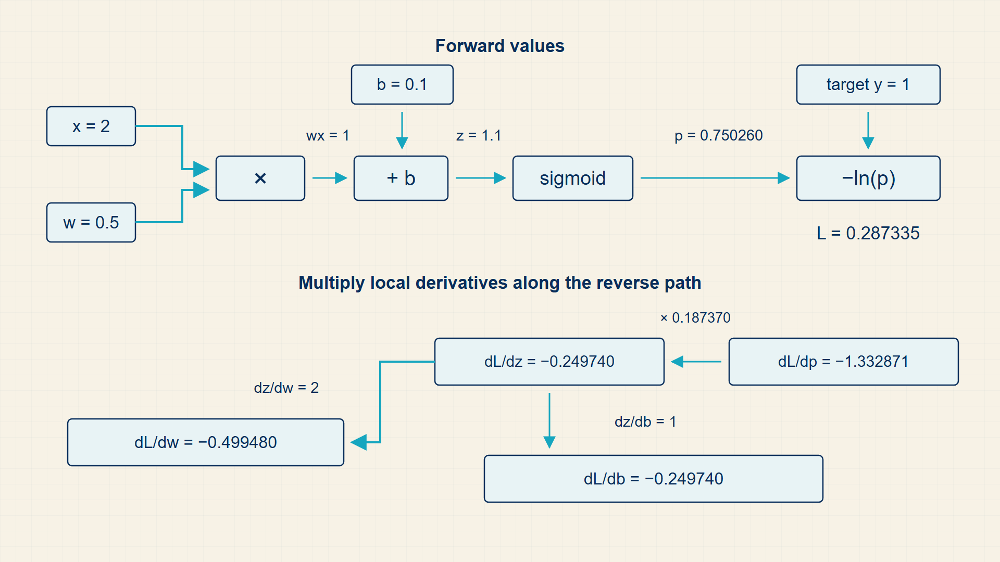
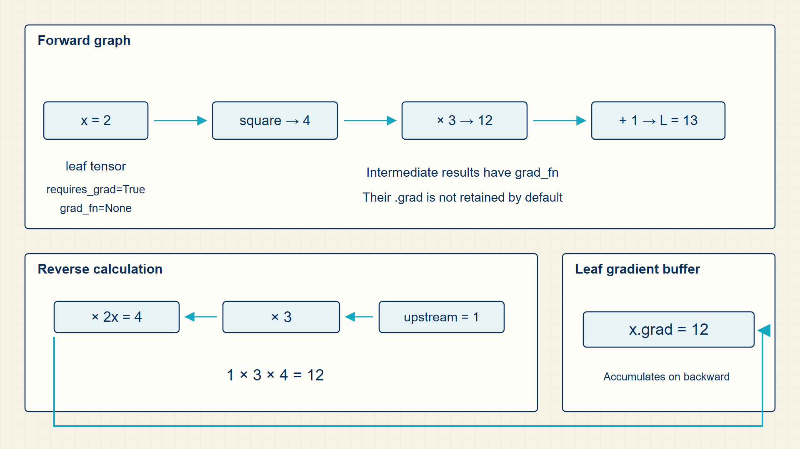

11 Backpropagation: Tracing Error Gradients via the Chain Rule
Every trainable parameter affects the loss through a sequence of intermediate calculations. The chain rule traces how a small change at one point changes the final loss.
A loss depends on every parameter through many intermediate calculations. Computation graphs and the chain rule organize those dependencies so reverse-mode autodiff can calculate all required gradients efficiently.
In code, torch.autograd records differentiable operations implicitly; loss.backward() populates .grad, and torch.no_grad() separates parameter updates from graph construction.

11.1 Calculating Derivatives and Multivariable Gradients
A derivative is a local rate of change, and a gradient collects the partial derivatives of one scalar loss with respect to many parameters.
- Derivative: Local rate of change of one scalar with respect to another.
- Gradient: Vector of partial derivatives of a scalar with respect to many variables.
- Partial derivative: Derivative with respect to one variable while holding others fixed.
The sign of a gradient says which direction increases the loss locally. Gradient descent moves parameters in the opposite direction so the loss should decrease for a small enough step.
The magnitude is not a guarantee of global importance. It is a local slope at the current parameter values and current batch.
A downstream loss changes x through the local derivative of y with respect to x.
Single-variable chain rule:
\[ \frac{dL}{dx} = \frac{dL}{dy}\,\frac{dy}{dx} \tag{11.1}\]
where L is scalar loss; y is intermediate value; x is earlier input or parameter.
A small change in x changes y, and that change in y changes L; multiplying local rates gives the total local rate.
backpropagation applies this local multiplication repeatedly in reverse graph order.
Backpropagation passes gradients backward through local Jacobians.
Vector-Jacobian view:
\[ \frac{dL}{dx} = \frac{dL}{dy}\,J_{y,x} \tag{11.2}\]
Gradient descent direction:
\[ \theta_{\mathrm{new}} = \theta - \eta\,\nabla_{\theta}L(\theta) \tag{11.3}\]
where θ is current parameters; η is learning rate; grad L is loss gradient.
The negative gradient is the local direction of steepest first-order decrease.
The update is one step; training repeats it over batches and records the resulting loss.
Example: Measuring Local Sensitivity
Single-variable chain rule:
If \(∂L/∂y\) = 5 and \(∂y/∂x\) = 3, then \(∂L/∂x\) = 15.
Vector-Jacobian view:
If \(∂L/∂y\)=[2,3] and J has diagonal [1,4], then \(∂L/∂x\)=[2,12].
Gradient descent direction:
For \(\theta=1\), \(η=0.1\), and \(gradient=3\), the update gives 0.7.
A gradient gives one local change rate for every parameter or input coordinate. A computation graph records which local operations must be connected by the chain rule.
11.2 Tracing Forward Dependencies on Computational Graphs
A computation graph records the operations that produced a tensor. PyTorch autograd uses this graph to apply the chain rule backward from the scalar loss to every tensor that requires gradients.
- Node: An operation or tensor in the computation graph.
- Edge: A data dependency between operations.
- Leaf tensor: A tensor created by the user, often a parameter, rather than by an operation.
- Autograd: PyTorch’s automatic differentiation system.
The forward pass builds values and, when gradients are enabled, stores enough history for the backward pass. The backward pass visits the graph in reverse dependency order and accumulates derivatives.
This is why in-place operations and detached tensors can be dangerous. They may change or remove information that the backward pass expects.
A graph node is a stored value such as x, z, p, or L. An edge is the operation that produced the next value. PyTorch needs the operation history because the value alone is not enough to determine its derivative with respect to earlier tensors.
When the same parameter contributes to more than one path, autograd adds the gradient contributions. This accumulation is why gradients live in a buffer such as w.grad until the optimizer reads and clears it.
Computation map
The computation starts with input tensors and produces parameter gradients through the intermediate objects shown below.

The forward pass combines the input \(x\) and parameters \(w,b\) to produce the intermediate values \(z,p\) and the scalar loss \(L\). The backward pass follows those stored operations in reverse and adds gradients to w.grad and b.grad.
A computation graph records the intermediate values that connect one input and parameter set to a scalar loss.
A small computation graph:
\[ z = wx+b,\quad p=\sigma(z),\quad L=-\log(p) \tag{11.4}\]
where x is input scalar; w,b is trainable weight and bias; z is logit; p is predicted probability; L is scalar loss.
The forward pass evaluates the equations from left to right. The backward pass starts at L and uses the local derivative of each operation in the reverse order.
The three operations are affine scoring, sigmoid probability, and negative log loss.
Example: Tracing one forward pass and one backward pass
Use \(x=2\), \(w=0.5\), \(b=0.1\), and a positive target so the loss is \(L=-\log(\operatorname{sigmoid}(z))\).
Forward values:
\(z = 2 \cdot 0.5 + 0.1 = 1.1\)
\(p = \operatorname{sigmoid}(1.1) = 0.750\)
\(L = -\log(0.750) = 0.288\)
Local derivatives:
\(\partial L / \partial z = p - 1 = -0.250\)
\(\partial z / \partial w = x = 2\)
\(\partial z / \partial b = 1\)
Accumulated parameter gradients:
\(\partial L / \partial w = -0.250 \cdot 2 = -0.500\)
\(\partial L / \partial b = -0.250 \cdot 1 = -0.250\)
Autograd stores the forward operations so loss.backward() can produce these parameter gradients without manually writing the reverse calculation.
The forward graph stores the intermediate values needed to evaluate local derivatives. Reverse-mode differentiation reuses that graph in the opposite direction to accumulate parameter gradients.
11.3 Accumulating Gradients Efficiently via Vector-Jacobian Products
A Jacobian records how every output coordinate changes with every input coordinate; reverse-mode differentiation multiplies it by an upstream gradient without storing the full matrix.
- Jacobian: A matrix of partial derivatives whose row i describes how output i changes with every input coordinate.
- Vector-Jacobian product: A row-vector combination of Jacobian rows that propagates an upstream gradient to the inputs.
- Reverse mode: A differentiation direction that starts from output sensitivities and moves toward the inputs.
For a vector output \(y=f(x)\), the Jacobian contains every local sensitivity. If the final objective is \(L\), the backward pass combines the upstream loss gradient with the Jacobian instead of computing a separate derivative for each input-output pair.
This is why a neural-network backward pass can reuse local derivatives. Each operation receives an upstream gradient and returns the gradient with respect to its own inputs and parameters.
The Jacobian records how every output coordinate changes with every input coordinate.
Jacobian definition:
\[ J_{i,j}=\frac{\partial y_{i}}{\partial x_{j}} \tag{11.5}\]
where x is input vector in \(\mathbb{R}^{n}\); y is output vector in \(\mathbb{R}^{m}\); J is m by n Jacobian matrix.
Differentiate each output coordinate with respect to each input coordinate and arrange the results in a matrix. The scalar derivative is the special case \(m=n=1\).
Rows correspond to output coordinates and columns correspond to input coordinates.
The vector-Jacobian product maps an upstream loss gradient to the input coordinates.
Vector-Jacobian product:
\[ \frac{dL}{dx}=\frac{dL}{dy}\,J \tag{11.6}\]
where \(∂L/∂y\) is upstream row-vector gradient; J is jacobian of y with respect to x; \(∂L/∂x\) is gradient with respect to x.
The multivariable chain rule adds the contribution from every output path that depends on the same input coordinate. Those sums are exactly the entries of the row-vector product.
The multiplication sums every output path that depends on the same input coordinate.
For one input coordinate, the total derivative adds the contribution from every output coordinate that depends on it.
Coordinate form of the chain rule:
\[ \frac{\partial L}{\partial x_{j}}=\sum_{i}\frac{\partial L}{\partial y_{i}}\,\frac{\partial y_{i}}{\partial x_{j}} \tag{11.7}\]
where \(x_{j}\) is input coordinate j; \(y_{i}\) is output coordinate i; L is scalar loss.
The derivative of the loss with respect to \(x_{j}\) is the sum of local output sensitivities multiplied by the corresponding input sensitivities.
The index j selects an input coordinate; i runs over output coordinates.
Example: Jacobians and vector-Jacobian products
Jacobian definition:
For \(y=(x_{1}+2x_{2}, 3x_{1}-x_{2})\), \(J=[[1,2],[3,-1]]\).
Vector-Jacobian product:
If \(\partial L/\partial y=(2,3)\) and \(J=\begin{bmatrix}1&2\\3&-1\end{bmatrix}\), then \(\partial L/\partial x=(2,3)J=(11,1)\).
Coordinate form of the chain rule:
If the two products are 2 and 9, then the derivative with respect to \(x_{j}\) is \(2 + 9 = 11\).
A vector-Jacobian product passes one accumulated gradient backward through one operation without materializing a full Jacobian. Automatic differentiation applies that procedure across the graph.
11.4 Executing Reverse-Mode Automatic Differentiation
Backpropagation is the chain rule applied systematically to a computation graph. It is not a separate learning algorithm; it is the derivative computation used by gradient-based optimizers.
- Chain rule: A rule for differentiating a composition of functions.
- Backward pass: The reverse traversal that computes gradients.
- Gradient accumulation: Adding gradient contributions from multiple graph paths or multiple backward calls.
If a parameter affects the loss through several paths, its final gradient is the sum of contributions from those paths. This is common in shared embeddings and recurrent networks.
The loss must be scalar for the common loss.backward() call. If a tensor has multiple outputs, a vector-Jacobian product must specify which weighted combination of outputs is being differentiated.
Origin note: Backpropagation is reverse-mode automatic differentiation applied to neural networks; it was popularized for neural-network training by Rumelhart, Hinton, and Williams.
For logistic regression, the local derivative of binary cross-entropy with respect to the logit simplifies to p-y. The gradient of the weights is therefore the input vector multiplied by that logit derivative, averaged over the batch. Backpropagation obtains the same result by composing the local derivatives recorded during the forward pass.
In a multilayer network, a hidden activation can influence many outputs. Reverse-mode automatic differentiation accumulates all downstream contributions before continuing to earlier nodes. This is why a tensor’s .grad is a sum and why repeated calls to backward() accumulate unless gradients are cleared.
If a tensor feeds multiple downstream operations, its gradient is the sum of all path contributions.
Gradient accumulation:
\[ \operatorname{grad}_{x}=\sum_{\text{paths }p}\operatorname{contribution}_{p} \tag{11.8}\]
Backpropagation connects adjacent local derivatives along each path from the scalar loss to a parameter.
Chain rule:
\[ \frac{dL}{dx}=\frac{dL}{dy}\,\frac{dy}{dx}\quad\text{for }y=f(x) \tag{11.9}\]
where L is scalar loss; x,y is adjacent values in the computation graph.
A change in x affects L through y, so local sensitivities multiply.
Backpropagation applies this multiplication in reverse graph order.
Example: Gradient accumulation
If two downstream paths contribute 2 and 5 to the same tensor, the accumulated gradient is 7.
Example: Chain rule
If \(∂L/∂y\)=5 and \(∂y/∂x\)=3, then \(∂L/∂x\)=15.
The following runnable PyTorch example creates one scalar leaf tensor \(x=2\), evaluates \(y=3x^2+1\), and calls backward() on the scalar result. The expected output is 12.0, because the derivative \(6x\) equals 12 at \(x=2\). Calling backward() again without clearing x.grad would accumulate another 12 rather than replace the existing value.
Code example: A scalar loss creates gradients on tensors that require them.
import torch
x = torch.tensor([2.0], requires_grad=True)
y = 3 * x ** 2 + 1
y.backward()
print(x.grad) # 12, because d(3x^2+1)/dx = 6xThe printed gradient is 12 because the local derivative of 3x² + 1 at \(x = 2\) is 6\(x = 12\).
The scalar is intentionally small. Neural-network autograd applies the same reverse accumulation to many tensor operations and parameter paths.
Reverse-mode autodiff produces gradients for trainable parameters from one scalar loss. Optimizers store those gradients and any additional state needed for the next update.
11.5 Managing Optimizer Memory State and Gradient Buffers
After backpropagation computes gradients, the optimizer changes parameter tensors. This update is a state transition: parameters and sometimes optimizer buffers move from one step to the next.
- Learning rate: The step-size multiplier applied to the update direction.
- Optimizer step: The operation that mutates parameters based on gradients and optimizer state.
- Zero grad: The operation that clears accumulated gradients before the next backward pass.
A training loop alternates between forward pass, loss computation, backward pass, optimizer step, and gradient clearing. The same loop can train logistic regression or a transformer; the difference is the model graph.
Forgetting to clear gradients changes the effective update because PyTorch accumulates gradient values. That behavior is useful for intentional gradient accumulation but wrong when accidental.
The backward pass fills gradient buffers; the optimizer step consumes those buffers and any optimizer state. Gradient clipping, when used, sits between those two moments: it modifies the stored gradients before the optimizer reads them.
Backpropagation leaves one gradient tensor attached to each parameter that required a gradient. The optimizer reads that buffer, updates its own momentum or second-moment state, and changes the parameter tensor in place.
Because PyTorch accumulates gradients by addition, a training loop must zero or clear gradients before the next backward pass. Failing to clear them turns the next update into a sum over multiple batches.
- Forward pass: compute predictions and loss.
- Backward pass: populate
.gradfields. - Optimizer step: update parameters.
- Gradient reset: clear gradients for the next batch.
Gradient buffers and optimizer state are the software form of repeated learning updates. Nonlinear networks use the same mechanism through more layers and intermediate representations.
11.6 Backpropagation trace
Backpropagation should be read as a reverse computation over a graph. The forward pass creates tensors such as z, p, and L. Each tensor knows which operation produced it, so when L.backward() starts from the scalar loss, PyTorch can walk backward through the graph and multiply local derivatives.
The gradient buffer is a separate storage location from the graph itself. For a parameter tensor w, w.grad is a tensor with the same dimensions as w, filled after backward. PyTorch accumulates into this buffer, which is why zero_grad() is part of the training computation.
Backpropagation is an execution over saved tensor operations: a scalar loss sends derivatives backward through the graph.

The forward operations create intermediate values. The backward pass applies their local derivatives in reverse order and accumulates one gradient for each trainable parameter.
Backpropagation multiplies local derivatives in reverse topological order from a scalar loss. Every gradient buffer has the same dimensions as the parameter or activation it differentiates. The forward pass stores operation history; the backward pass walks that history and accumulates gradients.
In PyTorch, loss.backward(), parameter .grad, and optimizer.zero_grad() expose the graph and buffers.
Performance note: Backward often stores or recomputes activations; memory pressure can exceed the cost of the arithmetic.
Example: Annotated computation graph for one binary classifier step
Nodes and their local derivatives for one scalar example:
Forward graph (single example, scalar ops):
\(z_{\mathrm{mul}}=x\cdot w=2\cdot0.5=1.0\)
\(z=z_{\mathrm{mul}}+b=1.0+0.1=1.1\)
\(p = \operatorname{sigmoid}(z) = 1/(1+\exp(-1.1)) = 0.750\)
\(L = -\log(p) = -\log(0.750) = 0.288 (y=1)\)
Local derivatives at each node:
\(\frac{dL}{dp} = -\frac{1}{p} = -\frac{1}{0.750} = -1.333\)
\(\frac{dp}{dz} = p(1-p) = 0.750\cdot0.250 = 0.188\)
\(\frac{dz}{dw} = x = 2.0\)
\(\frac{dz}{db} = 1.0\)
Backward pass (chain rule):
\(\frac{dL}{dz} = \frac{dL}{dp} \cdot \frac{dp}{dz} = -1.333 \cdot 0.188 = -0.250\)
Equivalently, \(\frac{dL}{dz}=p-y=0.750-1.0=-0.250\).
\(\frac{dL}{dw} = \frac{dL}{dz} \cdot \frac{dz}{dw} = -0.250 \cdot 2.0 = -0.500\)
\(\frac{dL}{db} = \frac{dL}{dz} \cdot \frac{dz}{db} = -0.250 \cdot 1.0 = -0.250\)
These values appear in w.grad and b.grad after loss.backward().
Key calculations
Chain rule:
\[ \frac{dL}{dw}=\frac{dL}{dz}\,\frac{dz}{dw} \tag{11.10}\]
Affine local derivative:
\[ \frac{dz}{dw}=x \tag{11.11}\]
Update:
\[ w_{\mathrm{next}}=w-\mathrm{lr}\,\frac{dL}{dw} \tag{11.12}\]
Dimension trace
These dimensions appear in the computation in order.
- Input batch X: [B, D].
- Parameter w: [D, H], a leaf tensor with
requires_grad=True. - Activation h: [B, H], an intermediate tensor whose
grad_fnlinks to the operation that produced it. - Loss L: [], a scalar endpoint for backward.
- Gradient buffer w.grad: [D, H], the same dimensions as the parameter.
PyTorch implementation notes
loss = criterion(model(X), y)computes the final scalar from the forward graph.loss.backward()fills.gradon leaf parameters.- optimizer.step() mutates parameters using those gradients.
optimizer.zero_grad()prevents gradients from previous batches from being added again.
Backpropagation is reverse-mode chain rule over the computation graph created by the forward pass.
Multilayer classifiers apply these gradients to affine maps and nonlinearities.